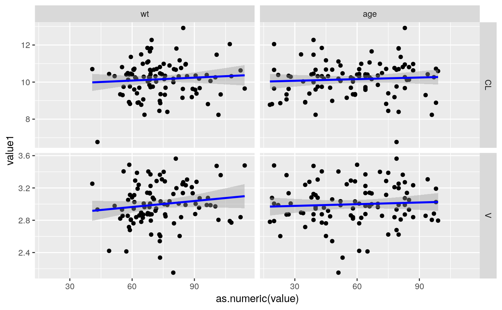

doubleStack.RdDataset will be melted by specified columsn after it will be melted by a second set of columns. This comes in handy when plotting multiple individual parameter estimates versus multiple covariates.
doubleStack(data, vars1, vars2)
| data | dataset containing all variables specified in vars1 and vars2 |
|---|---|
| vars1 | The first variable to stack by. For example |
| vars2 | The second variable to stack by after the first stack. For example |
A data.frame
set.seed(1234) myDF = data.frame(id=1:100) myDF$wt = with(myDF, signif(rnorm.by.id(id, 76,15))) myDF$age = with(myDF, signif(sample.by.id(id, samples = seq(18,99)))) myDF$sex = with(myDF, sample.by.id(id, samples = c("F","M"))) myDF$CL = with(myDF, signif(rnorm.by.id(id, 10,1))) myDF$V = with(myDF, signif(rnorm.by.id(id, 3,0.25))) stacked.df = doubleStack(myDF, vars1 = c("CL","V"), vars2 = c("wt","age","sex")) head(myDF)#> id wt age sex CL V #> 1 1 57.8940 72 F 10.4852 2.85501 #> 2 2 80.1614 61 M 10.6968 2.76168 #> 3 3 92.2666 44 M 10.1855 2.95514 #> 4 4 40.8145 80 F 10.7007 3.25245 #> 5 5 82.4369 61 M 10.3117 3.00591 #> 6 6 83.5908 78 F 10.7605 2.83774head(stacked.df)#> id variable1 value1 variable value #> 1 1 CL 10.4852 wt 57.894 #> 2 2 CL 10.6968 wt 80.1614 #> 3 3 CL 10.1855 wt 92.2666 #> 4 4 CL 10.7007 wt 40.8145 #> 5 5 CL 10.3117 wt 82.4369 #> 6 6 CL 10.7605 wt 83.5908library(ggplot2) ggplot(subset(stacked.df, variable != "sex"), aes(x=as.numeric(value), y = value1)) + geom_point() + stat_smooth(method="lm", col = lin.fit.col) + facet_grid(variable1 ~ variable,scales="free_y")